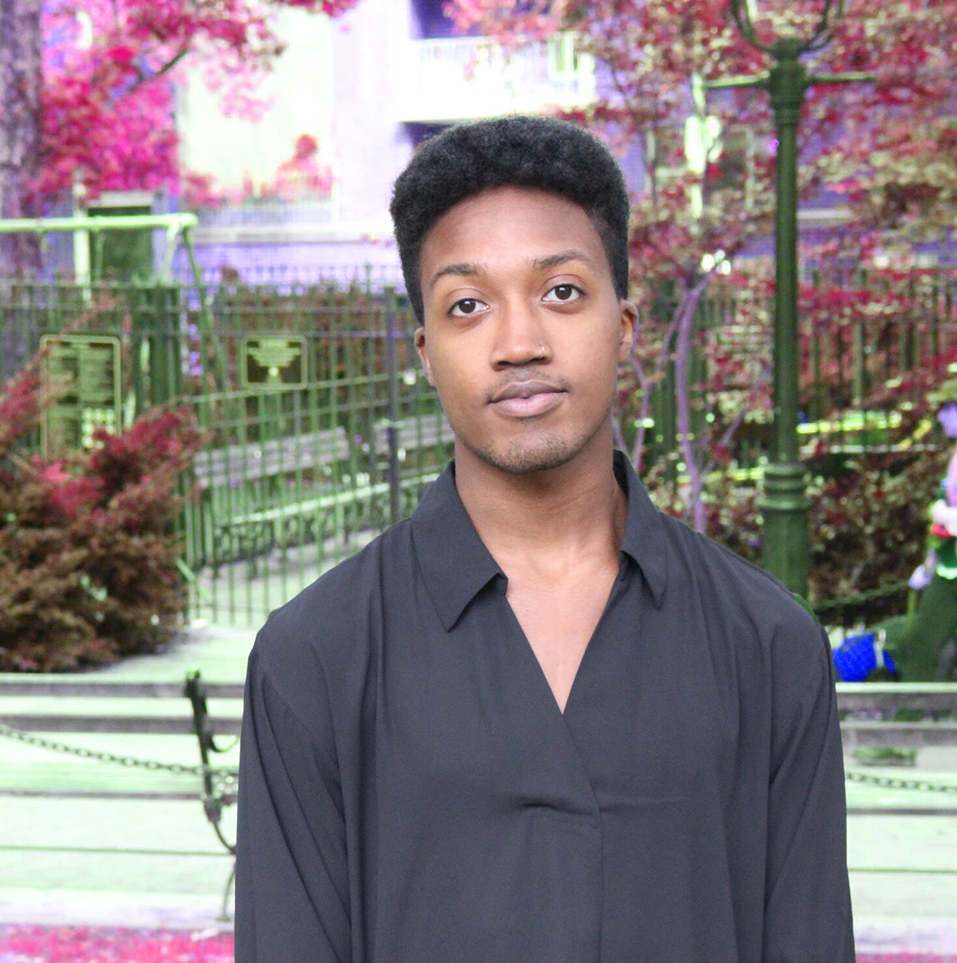
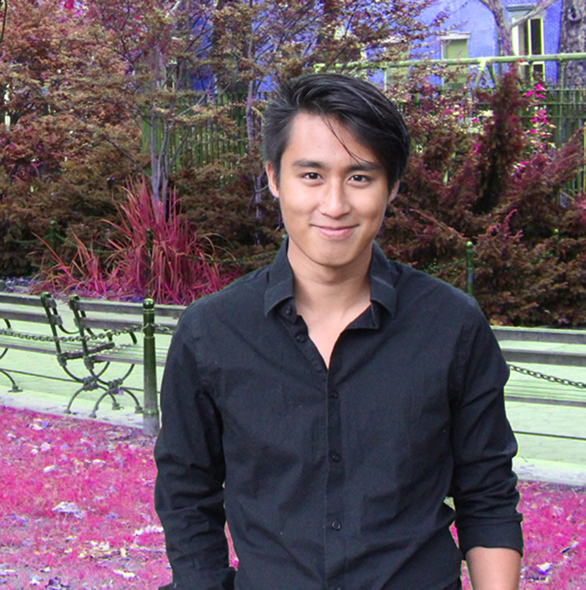

Meet the Directors

Teagan Rabuano (they/them) is a transgender theatre maker and activist. They are a 2018 graduate of New York University's Tisch School of the Arts, where they received their BFA in Drama and Gender & Sexuality Studies with double honors and completed their thesis on representations of the trans-feminine body in theatre and live performance. They are currently enrolled at NYU as a Masters student in Arts Politics. They have worked with the National Center for Transgender Equality, Lambda Legal, GLAAD and GLSEN. In addition to this work, Teagan has been featured on Condé Nast's them., Huffington Post and in GLAAD's amp series. In their free time, they are busy attempting to watch every film Reese Witherspoon has ever been in!

Malichi Morris (they/them) is a queer artist of color who believes that art should be used to champion the complex experiences of marginalized people. They received their BFA in Drama at Tisch School of the Arts in 2018. With a background in devised experimental theatre and screenwriting and acting, they use their knowledge to elevate the representation of Queer People of Color across different mediums, with a focus on web series and short form sitcoms. Now at The New Victory Theater, working in the Education and Ticket Services departments, they help expose youth in the greater NYC area to the wonderful and transformative world of theatre.

Leonard Santos (he/him) is a gay creator of music and media. For the last six years, he has acted as the music director for multiple a cappella groups and theatre programs, including the NYU Vocaholics and the Stony Hill Pebble Players. Leonard has also done work in media and web design, and is currently the Head Media Lab Assistant at the NYU Media Lab and a tutor for the university's computer science program. Right now, he is also working on his senior honors thesis to research the mental health of queer youths in the country in order to find ways to make resources and assistance accessible to all communities. When not working at Capital Q, Leonard is an honors student at NYU studying Media, Culture and Communication with minors in entertainment business and web design.